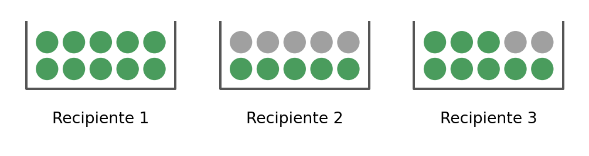
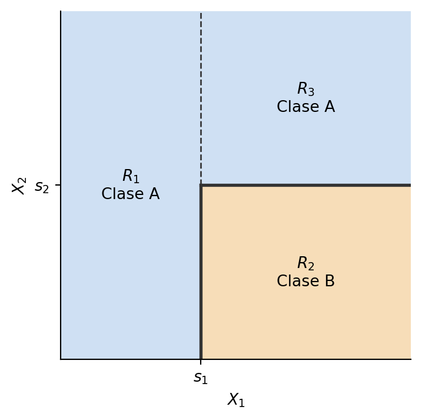

2 Modelos sencillos, pero efectivos - Parte 1
Este capítulo y el próximo presentan dos modelos de aprendizaje automático sencillos pero sumamente útiles. El primero de ellos es árbol de decisión, un modelo ampliamente utilizado que también sirve de base para enfoques más complejos. El segundo es la regresión lineal, probablemente el modelo más utilizado dentro de la estadística y del aprendizaje automático.
2.1 Árboles de decisión
Un árbol de decisión es una estructura compuesta de ramas, y nodos internos y externos (hojas), tal como se muestra en la Figura 2.1. El árbol se lee de arriba hacia abajo. Dada una nueva instancia, ésta es clasificada recorriendo el árbol de decisión: en cada nodo interno, el árbol hace una pregunta a la instancia sobre alguno de sus atributos. Según la respuesta a esta pregunta, deriva a la instancia por alguna de sus ramas, donde puede ocurrir que aparezca otro nodo —otra pregunta— o que termine en una hoja (nodo externo). La hoja contiene la etiqueta que le corresponde a esa instancia, finalizando su recorrido en el árbol.
Programar un árbol de decisión, con las preguntas ya definidas, es fácil. Es simplemente una combinación de estructuras de control if - else. Pero el aprendizaje automático no se trata de eso: se trata de técnicas para generar esas preguntas de forma automática. Vamos a ver cómo lo hacen los árboles de decisión. Los árboles de decisión pueden ser aplicados tanto a clasificación como a regresión. Empezaremos por clasificación, y luego mencionaremos qué cambia en el caso de regresión.
2.1.1 Entrenamiento de un árbol para clasificación
Como vimos en el primer capítulo de estas notas, para entrenar un modelo necesitamos dos cosas: una función de costo y una forma de optimizar sobre esa función de costo. El optimizador simplemente modifica parámetros o características internas del modelo para alcanzar un mínimo de esa función de costo o, en su defecto, disminuir su valor. Para los árboles de decisión aplicados a clasificación, necesitamos entender el concepto de impureza Gini.1
2.1.1.1 Impureza Gini
Supongamos que tenemos tres recipientes con 10 pelotas de colores cada uno (Figura 2.2). En el recipiente 1, hay 10 pelotas verdes; en el recipiente 2 hay 5 verdes y 5 grises; y en el recipiente 3 hay 8 verdes y 2 grises. Si te pidieran ordenar por pureza a los recipientes, ¿cómo lo harías?
La impureza Gini es un concepto que ayuda a responder esa pregunta. Ésta se calcula como
\[IG = 1 - \sum_{j=1}^K p_j^2\]
donde \(p_j\) es la proporción de cada clase, y en total hay \(K\) clases. En el caso de las pelotas de colores, el cálculo para cada recipiente es \(IG = 1 - p_{\text{verdes}}^2 - p_{\text{grises}}^2\), ya que solamente hay dos clases. Para el recipiente 1 esta cuenta da 0, para el recipiente 2 esta cuenta da 0.5 y para el recipiente 3, 0.32. En el caso del recipiente 2, toma el valor máximo de impureza para el caso de dos clases, ya que la impureza es máxima cuando todas las clases están en igual proporción. Entonces, por medio de la impureza Gini es posible cuantificar cuán puro (instancias con la misma etiqueta) es un conjunto. A más homogeneidad en las etiquetas, más puro es.

2.1.1.2 Entrenamiento de un árbol
El objetivo de entrenar un árbol de decisión es obtener las preguntas —las reglas de decisión— que usará para predecir sobre nuevas instancias. Hay varias formas de entrenar árboles; aquí nos concentraremos en CART (Classification and Regression Trees), uno de los métodos más usados.
El proceso comienza generando una lista de todas las reglas de decisión posibles.2 Para el caso de atributos numéricos, una regla de decisión se genera a partir de un umbral. Por ejemplo, ¿\(X_1 \leq 0.5\)? ¿\(X_2 \leq 0.75\)?, etc. Luego, hay que decidir cuál es la mejor regla, en el sentido de cuál es la que mejor sirve para predecir. Acá es donde entra la función de costo que mencionamos antes: se define que la mejor pregunta es la que resulte en menor impureza Gini en los nodos que genera. Entonces, el proceso que sigue el entrenamiento de un árbol se puede resumir así:
- Se calcula la impureza Gini para cada regla de decisión. Por cada una de ellas, se hace un promedio de las impurezas de los dos nodos que genera, ponderado por la proporción de instancias que cae en cada uno.
- Se elige la regla de decisión con menor impureza ponderada.
- Si se alcanzó un criterio de parada (por ejemplo, una profundidad máxima preestablecida), el proceso termina. Si no, se sigue construyendo el árbol de forma iterativa, tomando como muestra inicial las instancias de cada nodo y realizando los pasos 1 - 3 con las nuevas reglas de decisión que se puedan aplicar.
Cuando las hojas contienen instancias de una sola clase, se dice que son hojas puras y ya no se pueden crear más ramas a partir de ellas. En cambio, si contienen instancias de varias clases, son hojas impuras. Cuantas más preguntas permitimos que haga el árbol, más profundo será, por lo que obtendremos cada vez mayor cantidad de hojas puras, a costa de un menor número de instancias en cada hoja.
Esta forma de optimizar —en este caso, ir reduciendo la impureza Gini en cada nodo de decisión yendo de arriba hacia abajo (top-down)— se llama greedy. Es greedy porque se hace el mejor corte en cada nodo, sin mirar hacia adelante si se podría hacer un corte que no sea el mejor en ese momento pero que resulte en un mejor árbol en un corte posterior.
2.1.1.3 Predicción
¿Cómo es el proceso de predicción con un árbol de decisión? Dijimos anteriormente que cuando queremos predecir sobre una instancia, ésta recorre el árbol hasta llegar a la hoja correspondiente. Pero la hoja no necesariamente es pura. Entonces, el árbol siempre predice la moda de las clases en esa hoja, es decir, la clase mayoritaria.
2.1.1.4 Fronteras de decisión
Como vimos en el Capítulo 1, un clasificador genera una frontera de decisión, o, dicho de otra forma, pinta el espacio del color de cada clase.Formalemente, podemos decir que un clasificador divide el espacio de atributos en regiones \(R_1, \dots, R_M\) y le asigna una clase a cada una. Al recorrer ese espacio, en algún punto el clasificador deja de predecir una clase y pasa a predecir otra: el conjunto de esos puntos es la frontera de decisión. Cada familia de modelos genera fronteras con formas características. En los árboles, como cada nodo hace un corte sobre un único atributo \(X_j\) —separa las instancias con \(X_j \leq s\) de las que tienen \(X_j > s\)—, la frontera está formada por tramos perpendiculares a alguno de los ejes. Con dos atributos es fácil de visualizar: son segmentos verticales u horizontales. Con tres, son porciones de planos perpendiculares a alguno de los ejes. En general, para un número arbitrario de atributos, se trata de porciones de hiperplanos perpendiculares a alguno de los ejes.
Por ejemplo, para el árbol de la figura Figura 2.1, la frontera de decisión queda así:

2.1.2 Árboles de decisión para regresión
¿Qué cambia si queremos usar un árbol para regresión? El proceso es exactamente el mismo, pero cambiando la impureza Gini, que funciona sobre categorías, por la varianza, que funciona sobre valores numéricos. Al momento de predecir, no devolvemos la moda, sino el promedio. La combinación varianza/promedio no es casual: la varianza de un nodo es exactamente el error cuadrático medio que se comete si se predice con el promedio de ese nodo, y el promedio es justamente el valor que hace mínimo ese error. Es decir, la función de costo y la regla de predicción están alineadas.